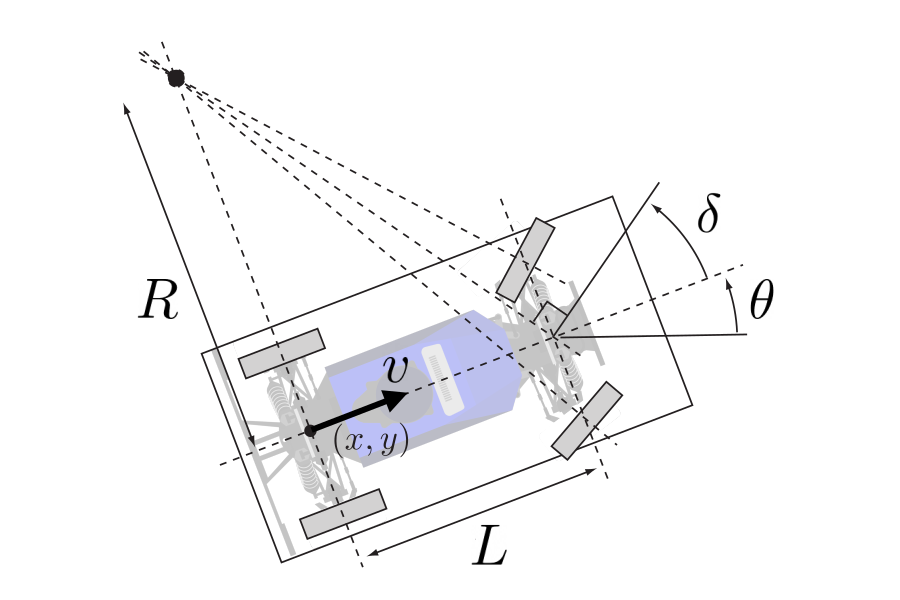
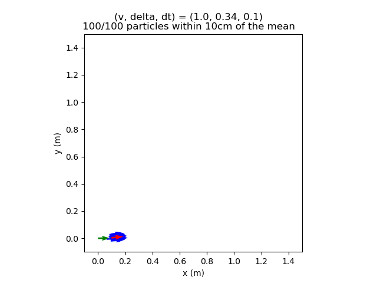
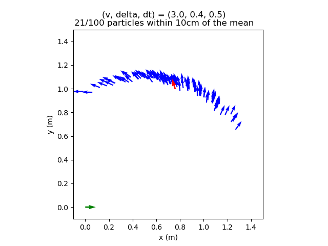
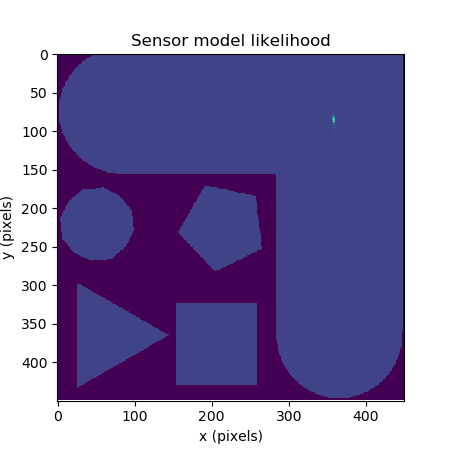
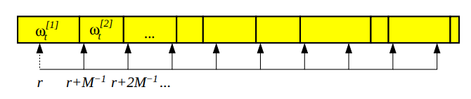

Project 2: Localization

Overview
In this project, you will localize your MuSHR car by implementing the particle filter algorithm. You will implement different parts of the particle filter: the motion model, the sensor model, and the overall filtering framework. To accurately estimate the car’s state, you will also tune parameters that govern the particle filter’s behavior.
Please complete this assignment with your group from the previous assignment.
The relevant lectures are:
- State Estimation, Bayesian Filtering
- Markov Localization
- Monte Carlo Sampling, Importance Sampling
- Particle Filtering
Getting Started
You can use the same Virtual Machine as you did in Project 1 for your development in Project 2. Follow these steps to get your workspace ready for Project 2:
You’ll need to add our starter repository as a new remote repository, named upstream. You’ll be able to pull the files from this upstream remote repository into your local repository to receive starter code updates. Running git pull upstream main should populate your repository with our Project 2 starter code.
From a fresh terminal:
$ # Add upstream remote repository
$ cd ~/mushr_ws/src/mushr478
$ git remote add upstream https://gitlab.cs.washington.edu/cse478/25wi/mushr478.git
$ git pull upstream main
$ # Build and activate projects workspace
$ source ~/dependencies_ws/devel/setup.bash
$ cd ~/mushr_ws
$ catkin clean
$ catkin build
$ source ~/mushr_ws/devel/setup.bashIf the builds succeed and you can run roscd localization, you’re ready to start! Please post on Ed if you have issues at this point.
State Estimation Definitions
Assume that the MuSHR car drives on a flat plane and localizes within a known map \(m\).
- States are defined as \(\mathbf{x}_t = (x_t, y_t, \theta_t)\) where \((x_t, y_t)\) is the car’s 2D position and \(\theta_t\) is its heading direction, with respect to the map’s reference frame.
- Controls are defined as \(\mathbf{u}_t = (v_t, \delta_t)\) where \(v_t\) is the speed and \(\delta_t\) is the steering angle, with respect to the car’s rear-axle reference frame.
- Sensor measurements are defined as \(\mathbf{z}_t = (z_t^1, z_t^2, \cdots, z_t^K)\) where each \(z_t^k\) is a range (distance) measurement, with respect to the MuSHR car’s LIDAR unit’s reference frame.
- The motion model specifies a probability distribution \(P(\mathbf{x}_t | \mathbf{x}_{t-1}, \mathbf{u}_t)\), i.e. the probability of reaching a state \(\mathbf{x}_t\) given that control \(\mathbf{u}_t\) is applied from state \(\mathbf{x}_{t-1}\).
- The sensor model captures the probability \(p(\mathbf{z}_t | \mathbf{x}_t, m)\), i.e. the probability of receiving sensor measurement \(\mathbf{z}_t\) given that the robot is in state \(\mathbf{x}_t\) and the environment map is \(m\).
Code Overview
Your particle filter keeps track of the possible states of the car using particles and weights, which are NumPy arrays of shape (M, 3) and (M,) respectively. Each particle is a candidate state, and the weight represents its probability.
We’ve provided a ParticleFilter class in particle_filter.py, which constructs instances of the KinematicCarMotionModelROS and LaserScanSensorModelROS classes. These classes are wrappers around the classes you will actually fill in with your implementations: KinematicCarMotionModel and SingleBeamSensorModel. The *ROS classes subscribe to the control/sensor ROS topics, and asynchronously update the particles and weights when the robot sends a control command or receives a laser scan from the sensor. This allows the particle filter to use all the messages that it receives, rather than operating at the rate of the slowest topic. You will also implement the LowVarianceSampler class for particle resampling.
Our implementation shares the particles and weights NumPy arrays between all four classes, rather than passing large arrays between them. This strategy is more efficient, but access to the particles and weights must then be synchronized. (We don’t want two classes to be simultaneously modifying the particles or weights.) As a result, the four classes also share a Python Lock object in their self.state_lock instance variable, and must acquire the lock before modifying the particles or weights. We’ve handled acquiring/releasing the lock, but your implementations must modify the entries of the particles and weights NumPy arrays in-place1.
Q1. Motion Model
In this question, you will implement the kinematic car motion model.

Figure 1: Visual representation of the kinematic car model
Motion Model Derivation
Let’s first review the kinematic model of the car and annotate the relevant lengths and angles (Figure 1).
First, let’s assume that there is no control and that the velocity was stable and the steering angle is zero. We can then write out the change in states: \[ \begin{align} \dot{x} &= v \cos \theta \\ \dot{y} &= v \sin \theta \\ \dot{\theta} &= \omega \end{align} \] where \(\omega\) is the angular velocity from the center of rotation to the center of the rear axle.
By the definition of angular velocity: \[ \omega = \frac{v}{R} = \frac{v}{L} \tan \delta \]
Formally, the changes in states are: \[ \begin{align} \frac{\partial x}{\partial t} &= v \cos \theta \\ \frac{\partial y}{\partial t} &= v \sin \theta \\ \frac{\partial \theta}{\partial t} &= \frac{v}{L} \tan \delta \end{align} \]
After apply control \(\mathbf{u}_t\), integrate over the time step: \[ \begin{align} \int_{\theta_{t}}^{\theta_{t+1}}d\theta &= \int_{t}^{t+\Delta t} \frac{v}{L} \tan \delta dt \\ \theta_{t+1}-\theta_{t} &=\frac{v}{L} \tan \delta \Delta t \end{align} \]
Changes in positions: \[ \int_{x_{t}}^{x_{t+1}} d x = \int_{t}^{t+\Delta t} v \cos \theta d t = \int_{t}^{t+\Delta t} v \cos \theta \frac{d \theta}{\frac{v}{L} \tan \delta} = \frac{L}{\tan \delta} \int_{\theta_{t}}^{\theta_{t+1}} \cos \theta d \theta \] \[ x_{t+1}-x_{t} = \frac{L}{\tan \delta}\left[ \sin \theta_{t+1} - \sin \theta_{t} \right] \]
\[ \int_{y_{t}}^{y_{t+1}} dy = \int_{t}^{t+\Delta t} v \sin \theta d t = \int_{t}^{t+\Delta t} v \sin \theta \frac{d \theta}{\frac{v}{L} \tan \delta} =\frac{L}{\tan \delta} \int_{\theta_{t}}^{\theta_{t+1}} \sin \theta d \theta \] \[ y_{t+1}-y_{t} =\frac{L}{\tan \delta} \left[ -\cos \theta_{t+1} + \cos \theta_{t} \right] \]
Putting it all together: \[ \begin{align} \theta_{t+1} &= \theta_{t} + \frac{v}{L} \tan \delta \Delta t \\ x_{t+1} &= x_{t} + \frac{L}{\tan \delta} \left[ \sin \theta_{t+1} - \sin \theta_{t} \right] \\ y_{t+1} &= y_{t} + \frac{L}{\tan \delta} \left[ -\cos \theta_{t+1} + \cos \theta_{t} \right] \\ \end{align} \]
Q1.1: Implement the kinematic car equations in the KinematicCarMotionModel.compute_changes method (src/localization/motion_model.py). Note that this method is deterministic: given initial state \(\mathbf{x}_{t-1}\) and control \(\mathbf{u}_t\), it integrates the kinematic car equations and returns a change in state \(\Delta \mathbf{x}_t\). You may find the lecture slides or the above derivation useful.
What if the steering angle is 0?
The update rule we derived divides by \(\tan \delta\), which means we’re dividing by 0 if the steering angle is 0. (Mathematically, the center of rotation is now infinitely far away.) Fortunately, the update rule becomes even simpler for this case: if there’s no steering angle, the car continues driving at angle \(\theta\) with velocity \(v\).
\[ \begin{align} \theta_{t+1} &= \theta_{t} \\ x_{t+1} &= x_{t} + v \cos \theta \Delta t\\ y_{t+1} &= y_{t} + v \sin \theta \Delta t \end{align} \]
In your implementation, you should treat any steering angle where \(| \delta |\) is less than delta_threshold as a zero steering angle.
You can verify your implementation on the provided test suite by running python3 test/motion_model.py. Your code should pass all test cases starting with test_compute_changes.
Next, to make this simple kinematic model robust to various sources of modeling error, you’ll add noise in three steps. Noise is parameterized by \(\sigma_v, \sigma_\delta\) (action noise) and \(\sigma_x, \sigma_y, \sigma_\theta\) (model noise).
- Given nominal controls \(\mathbf{u}_t = (v_t, \delta_t)\), sample noisy controls \(\hat{\mathbf{u}}_t = (\hat{v}_t, \hat{\delta}_t)\) where \(\hat{v}_t \sim \mathcal{N}(v_t, \sigma_v^2)\) and \(\hat{\delta}_t \sim \mathcal{N}(\delta_t, \sigma_\delta^2)\).
- Integrate kinematic car equations with noisy controls \(\Delta \hat{\mathbf{x}}_t = \int_{t-1}^t f(\mathbf{x}_{t-1}, \hat{\mathbf{u}}_t) dt\) (by calling the
compute_changesmethod). - Add model noise to the output \(\Delta \mathbf{x}_t \sim \mathcal{N}(\Delta \hat{\mathbf{x}}_t, \mathrm{diag}(\sigma_x^2, \sigma_y^2, \sigma_\theta^2))\).2
Q1.2: Implement this noisy motion model in the KinematicCarMotionModel.apply_motion_model method (src/localization/motion_model.py). There is an instance attribute corresponding to each noise parameter: vel_std corresponds to \(\sigma_v\), delta_std corresponds to \(\sigma_\delta\), etc. These instance attributes can be accessed with dot notation, e.g., self.vel_std.
Your implementation should also wrap the resulting \(\theta\) component of the state to the interval \((-\pi, \pi]\). Angles that differ by a multiple of \(2\pi\) radians are equivalent. For example, if the resulting \(\theta\) component was \(\theta = \frac{3\pi}{2}\), your implementation should return the equivalent angle \(\theta = -\frac{\pi}{2}\).
After completing Q1.1 and Q1.2, expect your code to pass all the test cases in test/motion_model.py.
Remember the plot you generated for Project 1 comparing the
norm_pythonandnorm_numpycomputation times? Your implementations for Q1.1 and Q1.2 should be vectorized using NumPy indexing, rather than iterating over each particle with Python for loops. Boolean array indexing will be particularly useful when thresholding \(\delta\).
Exploring the Motion Model Parameters
The noise in this motion model is controlled by the parameters \(\sigma_v, \sigma_\delta\) (action noise) and \(\sigma_x, \sigma_y, \sigma_\theta\) (model noise). We’ve provided some initial values in config/parameters.yaml, but it’ll be up to you to tune them and make sure they’re reasonable. We’ve provided a script to visualize samples from your probabilistic motion model, under the current noise parameters in config/parameters.yaml.
$ rosrun localization make_motion_model_plotThe staff solution produces the following plots with our motion model that is tuned to match the physical MuSHR car. Try to match these plots by tuning your parameters.

Figure 2: The initial state (green) and state from integrating the noise-free model (red). Particles (blue) after moving forward and slightly to the left.

Figure 3: Particles (blue) after moving forward and to the left. This banana-shaped curve is expected when noise is added to the system.
In
scripts/make_motion_model_plot, look at theexample_casesdictionary that generates these two plots. Each key of this dictionary is a tuple of nominal velocity, nominal steering angle, and duration to apply those nominal commands. Why does the motion model produce more particles within 10cm of the noise-free model prediction in Figure 2 than Figure 3?
Your particle filter performance will depend upon the parameters you choose for the motion and sensor models. The key to tuning is first understanding how each parameter affects the model.
Tune your motion model parameters to match the staff parameters. To explain your tuning process, please save three versions of the figure with (3.0, 0.4, 0.5) that were generated by different parameters (
mm1.png,mm2.png,mm3.png). In your writeup, explain what’s different between your plot and Figure 3 above, and how you’re changing the parameters in response to those differences. (Your last figure doesn’t need to match ours exactly.)
Q2. Sensor Model
In this question, you’ll implement the LIDAR sensor model described in lecture. The MuSHR car’s LIDAR unit emits infrared laser beams into the environment at fixed angular intervals and returns the measured distance along those beams. For an unsuccessful measurement, it returns NaN or 0. A sensor measurement \(\mathbf{z}_t\) is a vector of distances, one for each beam: \(\mathbf{z_t} = (z_t^1, \cdots, z_t^K)\). Assuming that each distance \(z_t^k\) is conditionally independent (given the state \(\mathbf{x}_t\) and map \(m\)) allows us to consider each beam separately.
First, we’ve provided some starter code to generate a simulated observation \(\mathbf{z}_t^{k*}\) given that the robot state is \(\mathbf{x}_t\). We use a raycasting library called rangelibc (implemented in C++/CUDA), which casts rays into the map \(m\) from the robot’s state and measures the distance to any obstacle/wall the ray encounters. This is similar to how the physical LIDAR unit measures distances.
Then, you’ll implement the sensor model \(P(z_t^k | \mathbf{x}_t, m)\) by considering the four different modes discussed in lecture. Specifically, you will implement a model that measures how likely you are to see a real observation \(z_t^k\), given that the simulated observation was \(z_t^{k*}\). You may find the lecture slides or the following summary useful. (Note that the \(p_\text{short}\) factor should be modeled more simply as with a linear probability density function.)
Sensor Model Modes
\[ \begin{align} p_\text{hit}(z_t^k | \mathbf{x}_t, m) &= \begin{cases} \mathcal{N}(z_t^k; z_t^{k*}, \sigma_\text{hit}^2) & 0 \leq z_t^k \leq z_\text{max} \\ 0 & \text{otherwise} \end{cases} \\ p_\text{short}(z_t^k | \mathbf{x}_t, m) &= \begin{cases} 2 \frac{z_t^{k*} - z_t^k}{z_t^{k*}} & z_t^k < z_t^{k*} \\ 0 & \text{otherwise} \end{cases} \\ p_\text{max}(z_t^k | \mathbf{x}_t, m) &= \mathbb{I}(z_t^k = z_\text{max}) \\ p_\text{rand}(z_t^k | \mathbf{x}_t, m) &= \begin{cases} \frac{1}{z_\text{max}} & 0 \leq z_t^k < z_\text{max} \\ 0 & \text{otherwise} \end{cases} \end{align} \]
The notation \(\mathcal{N}(z_t^k; z_t^{k*}, \sigma_\text{hit}^2)\) means that we’re computing the value of the probability density function, not that we’re sampling from a Gaussian distribution. (We would use \(x \sim \mathcal{N}(\mu, \sigma^2)\) to denote that \(x\) is being sampled from that Gaussian distribution.) The probability density function is a Gaussian parameterized with mean \(z_t^{k*}\) and variance \(\sigma_\text{hit}^2\), and we want to find its value for the input \(z_t^k\), i.e.
\[ \frac{1}{\sqrt{2\pi\sigma_\text{hit}^2}} \exp \left\{ -\frac{1}{2} \left( \frac{z_t^k - z_t^{k*}}{\sigma_\text{hit}} \right)^2 \right\} \]
The sensor model mixes the factors together with weights \(z_\text{hit}, z_\text{short}, z_\text{max}, z_\text{rand}\). In addition, noise in the \(p_\text{hit}\) factor is parameterized by \(\sigma_\text{hit}\). Later, you will choose values for these parameters.
You can speed up the sensor model by pre-calculating and caching the sensor probabilities. On our 2D map, continuous values are converted to discrete pixel distances. You can then store the LIDAR range values in a table where each row is the actual measured value, the column is the expected value for a given LIDAR range, and the value is the probability. At runtime, you’ll use rangelibc to generate simulated range measurements, then use the cached table to quickly look up sensor probabilities.
Q2.1: Implement the sensor model in the SingleBeamSensorModel.precompute_sensor_model method (src/localization/sensor_model.py). Your implementation should accept zero as a possible weight for the factors, as long as one of them is nonzero. Make sure the table is normalized to ensure probabilities sum to 1. Your implementation should be vectorized.
After completing Q2.1, expect your code to pass all the test cases when running python3 test/sensor_model.py.
Exploring the Sensor Model Parameters
We’ve provided two tools for tuning the sensor model. The following script visualizes the combined sensor model likelihood for a single simulated observation. Based on the similar plots from lecture and the textbook, this conditional probability plot should help you characterize the relative importance of \(z_\text{hit}, z_\text{short}, z_\text{max}, z_\text{rand}\). (Hint: which should be the largest weight?) Your tuned sensor model parameters will be specific to the MuSHR LIDAR unit, so it won’t match the exact plots from lecture or the textbook.
$ rosrun localization make_sensor_model_single_plotAs you’re tuning, it will also be helpful to visualize the likelihood of different poses given a single LIDAR scan. We’ve included a script that will pull the latest scan from the robot and evaluate your sensor model over a large number of poses covering every map cell. To use it, first launch the simulation with a new map.
$ roslaunch cse478 teleop.launch map:='$(find cse478)/maps/shapes_world_small.yaml'The more interesting the map, the more interesting the laser scan. Try some different maps3 and poses! To reposition the robot in simulation, use the “Publish Point” tool in the RViz toolbar: select the tool, then click where on the map you want the robot to be. You can, of course, teleoperate the robot too. Reposition the robot, then when you’re happy run:
$ rosrun localization make_sensor_model_likelihood_plotThe node may take a few minutes to calculate all of the probabilities for larger maps. When it’s done, a plot will open showing you what your model “thinks” about each position in the map. Each pixel represents the most likely particle for the given position, with its color telling about the weight of the particle. The darker purple pixels had low weights assigned, while the brighter, yellower pixels were assigned higher weights.
The staff solution produces the following plots with our sensor model that is tuned to match the physical MuSHR LIDAR. Try to match these plots by tuning your parameters.
Figure 4: Sensor model likelihood of the staff solution with the vehicle positioned at (4.25, 5.50, 0) on the shapes_world_small map.

Figure 5: Sensor model likelihood of the staff solution with the vehicle positioned at (9, 9, 0) on the shapes_world_small map.
In general, you should expect the model to have multiple modes when the scan is ambiguous, i.e. if the car could’ve been in any number of places and “seen” the same thing with its sensor. This pattern is especially obvious in environments with symmetry and happens all the time in realistic maps. For instance, expect hallways to produce a similar effect, with a mode becoming a streak along the axis of the passage. Tuning won’t change the fact that the sensor can’t tell some locations from others, but it will adjust how much confidence the model puts in different types of plausible locations.
Tune the parameters of your sensor model to match the reference sensor model likelihood plots in Figure 4 and Figure 5. To explain your tuning process, please save three versions of the conditional probability plot for \(P(z_t^k | {z_t^k}^*)\) that were generated by different sensor model parameters (
sm1.png,sm2.png,sm3.png). In your writeup, document your intermediate parameter choices and explain the visual differences between your plots.
With the final tuned parameters, provide the sensor model likelihood plot for the robot positioned at \((-9.6, 0.0, -2.5)\) in the
maze_0map. You can position the robot there precisely by providing arguments to the simulation launch file:roslaunch cse478 teleop.launch map:='$(find cse478)/maps/maze_0.yaml' initial_x:=-9.6 initial_y:=0 initial_theta:=-2.5.
Q3. Particle Filter
Finally, you will implement the particle filter algorithm, which uses particles to represent the robot’s belief about its state \(Bel(\mathbf{x}_t)\). Each particle has a state \(\mathbf{x}_t^{(i)}\), which represents a hypothetical robot at that particular state. More particles will help approximate the true belief distribution more closely.
Because the particle filter is recursive, it must be initialized with a prior belief over the robot’s state \(Bel(\mathbf{x}_0)\). In this project, we assume this prior belief is a Gaussian distribution centered around a particular state; it is represented with \(M\) particles sampled from that distribution.
Q3.1: Implement the method ParticleInitializer.reset_click_pose, which initializes the belief of the robot (src/localization/particle_filter.py). Given a geometry_msgs/Pose message describing the robot’s initial state, your code should initialize the particles by sampling from this Gaussian distribution.
After completing Q3.1, expect your code to pass all the test cases when running python3 test/particle_initializer.py.
In your implementation, the particles and weights will be updated asynchronously. That is, the motion model is applied whenever the particle filter receives a control message (with the speed of the motor and steering angle). The sensor model is applied whenever the particle filter receives a laser scan. This asynchronous structure allows the particle filter to utilize all the messages that it receives, rather than operating at the rate of the slowest topic.
Low-Variance Resampling

Figure 4: Low-variance resampling procedure (Probabilistic Robotics).
Resampling allows the particle filter to drop low-probability particles in favor of further exploring high-probability particles. In your implementation, you will line up a series of intervals associated with each particle. Each interval’s size is equivalent to the normalized weight of the particle.
Specifically, you will implement a low-variance resampler for your particle filter, as described in lecture.4 To draw \(M\) samples, you will choose a random number \(r \in [0, \frac{1}{M}]\). Then, you will draw samples by checking which particles the numbers \(r, r + \frac{1}{M}, r + \frac{2}{M}, \cdots\) correspond to.
There are two advantages of this low-variance resampler, compared to sampling \(M\) random numbers from the range \([0, 1]\). First, this strategy covers the space of samples more systematically. Second, if all the particle weights are the same, this low-variance resampler will sample all of them; no samples are lost.
Q3.2: Implement this low-variance resampler in the LowVarianceSampler.resample method (src/localization/resampler.py). You may find the np.searchsorted function useful for vectorizing the lookup.
After completing Q3.2, expect your code to pass all the test cases when running python3 test/resample.py.
Simulation Tests with Teleoperation
You can test your particle filter (including your tuned parameters) in simulation with:
$ roslaunch localization particle_filter_teleop_sim.launch map:='$(find cse478)/maps/cse2_2.yaml'By default, this will initialize a simulation with the robot at the origin and open a tailored RViz view of the world5. To reposition the robot in simulation, use the “Publish Point” tool in the RViz toolbar: select the tool, then click where on the map you want the robot to be. You’ll see the green pose arrow move to that position in a default orientation. Your particle filter will need to be reinitialized; after moving the robot with “Publish Point”, you should reinitialize it by using the “2D Pose Estimate Tool”. Select the tool, then click on the position you want to specify and drag in the desired direction.
As you drive the vehicle around, you should see your particle filter approximately correspond to the true pose of the robot.
This launch file has two conveniences.
- You can pass an initial location using the arguments
initial_x,initial_yandinitial_theta.initial_x:=16 initial_y:=28 initial_theta:=0is a useful starting position for thecse2_2map. Note that both the simulation and your particle filter will be initialized with the values you provide. - You can override your particle filter’s localization estimate with the true localization of the simulator by passing
fake_localization:=true. Your particle filter will still operate like normal, but the robot will quietly cheat by using the simulator when it needs to calculate positions with respect to the map. The only observable difference for now is that the laser scan data will follow the ground truth pose arrow instead of your particle filtered inferred pose arrow, which may make it easier to see this data if your filter’s estimates are causing the scan to jump around too much.
It may be helpful to see how the filter’s estimate compares to the ground truth in different situations. With the above launch file running, you can produce a plot showing the true and estimated paths with:
$ rosrun localization make_particle_filter_plot _duration:=30.0The script will wait for you to reinitialize the filter, then collect data for the given duration.
After you’re satisfied with your particle filter’s performance, make a path plot for a 60-second drive through CSE2. Try to avoid driving backwards as it makes the graph difficult to interpret.
Simulation Tests with Recorded Bag Files
We’ve collected several bags for you to test your particle filter against. A bag is a file in a special format containing serialized ROS messages that can be played back at will. This makes it possible to run a physical robot while saving diferent streams of messages and later test algorithms against the recorded data. These bags contain all the data necessary to run the particle filter, as well as the output of our particle filter when processing the same data.
We’ve provided the download_bags.sh script, which will automatically download the bags to the localization/bags directory. Just run:
$ rosrun localization download_bags.shTo evaluate your particle filter implementation (including your tuned parameters) with a bagfile, run:
$ rostest localization particle_filter.test bag_name:="circle" --textYou can provide the name (without the file extension) of any bag in the bag/ directory. The test will summarize the estimation error of your filter, but in order to diagnose problems, you’ll need to visualize what’s happening during the test:
- Add the
rviz:=trueoption to pop open RViz in a configuration showing the reference solution’s estimate and your filter’s estimate evolving as the bag plays. - Add
plot:=trueto produce a path plot for the test.
It’s unlikely that your filter will produce exactly the same results as the reference solution, but the expected poses of both filters should be similar at all times. The terminal will print the median \(x, y, \theta\) errors. At the end of the run on full.bag your median errors should all be less than 0.1.
Running on the Car
Follow the Lab Guide to learn how to run teleop on the car and transfer your code to the car.
In the MuSHR Lab, place your MuSHR car at the origin of the map. Start teleop, then in another terminal run the following command to specify the map.
$ rosrun map_server map_server $(rospack find cse478)/maps/cse022.yamlIn yet another terminal, start the particle filter with the following command.
$ roslaunch localization particle_filter_sim.launch use_namespace:=true publish_tf:=true tf_prefix:="car/"On your workstation, start Rviz and visualize:
- The
/mapMap topic - The
/pf/inferred_posePose topic - The
/scanLaserScan topic - The
/pf/particlesPoseArray topic
How to visualize a topic in Rviz
At the bottom of the left “Displays” pane, click the “Add” button.
Click on the “by topic” tab on the popup that appears to see the list of currently active topics.
Find the topic you want and double click it.
Note: make sure to start Rviz after running all the commands on the car and setting
ROS_MASTER_URI=http://<ROBOT_IP>:11311, or setting your initial pose in the next step may not work. Also be sure to run Rviz on your workstation, as setting your initial pose may not work from within the VM.
Click on the 2d Pose Estimate button, then click and drag to indicate your car’s initial position and orientation. The particle filter should start estimating your car’s position, and you should see the particles (small red arrows) initialize and then converge to the cars true position.
Once your particle filter has started, you can use the joystick to teleoperate the MuSHR car around the lab space. You may need to re-tune your parameters to make them work better on the physical robot.
With the particle filter running in the lab space, record a bagfile of your car driving around the lab space. The bag file should include the initial pose, inferred pose, particles, laser scan, and joystick controls and should be show your car driving for at least 25 feet. See rosbag record for more details on creating a bagfile. To keep the file size small, make sure to select the topics that you record carefully.
Deliverables
Answer the following writeup questions in localization/writeup/README.md, including the figures that you generated above. All figures should be saved in the localization/writeup directory.
- In the motion model plot, why are there more particles within a 10cm radius of the noise-free model prediction in Figure 2 than Figure 3?
- Include
mm1.png,mm2.png, andmm3.png, your three intermediate motion model plots for control \((v, \delta, dt) = (3.0, 0.4, 0.5)\). Use them to explain your motion model parameter tuning process. For each plot, explain how it differs from Figure 3, and how you changed the parameters in response to those differences. The last plot should reflect your final tuned parameters. - What are the drawbacks of the sensor model’s conditional independence assumption? How does this implementation mitigate those drawbacks? (Hint: we discussed this in class, but you can look at
LaserScanSensorModelROSfor the details.) - Include
sm1.png,sm2.png, andsm3.png, your three intermediate conditional probability plots for \(P(z_t^k|{z_t^k}^*)\). Document the sensor model parameters for each plot and explain the visual differences between them. - Include your tuned sensor model likelihood plot for the robot positioned at state \((-9.6, 0.0, -2.5)\) in the
maze_0map. - Include your particle filter path plot for your 60-second drive through CSE2.
- Include your bagfile recording of the particle filter running on the car in the writeup directory.
To check your complete implementation, you can run all the tests above with catkin test localization.
Submission
As with Project 1, you will use Git to submit your project (code and writeup).
From your mushr478 directory, add all of the writeup files and changed code files. Commit those changes, then create a Git tag called submit-proj2. Pushing the tag is how we’ll know when your project is ready for grading.
$ cd ~/mushr_ws/src/mushr478/
$ git diff # See all your changes
$ git add . # Add all the changed files
$ git commit -m 'Finished Project 2!' # Or write a more descriptive commit message
$ git push # Push changes to your GitLab repository
$ git tag submit-proj2 # Create a tag named submit-proj2
$ git push --tags # Push the submit-proj2 tag to GitLabFor example, when updating states, the result should be stored in the original NumPy array object
states, rather than returning a new array. You can still create and use intermediate NumPy arrays for your computations (although that does require allocating space for this new object and therefore more overhead, which we would ideally minimize). This post may also be helpful to you; while it discusses the built-in Python list as an example, the same ideas generally hold.↩︎The return value from
compute_changes\(\Delta \hat{\mathbf{x}}_t\) is a NumPy array with shape (M, 3). Call its columns \(\Delta \hat{x}_t, \Delta \hat{y}_t, \Delta \hat{\theta}_t\). Then, this notation \(\Delta \mathbf{x}_t \sim \mathcal{N}(\Delta \hat{\mathbf{x}}_t, \mathrm{diag}(\sigma_x^2, \sigma_y^2, \sigma_\theta^2))\) is equivalent to sampling each component of the model noise independently, i.e. \(\Delta x_t \sim \mathcal{N}(\Delta \hat{x}_t, \sigma_x^2)\), \(\Delta y_t \sim \mathcal{N}(\Delta \hat{y}_t, \sigma_y^2)\), \(\Delta \theta_t \sim \mathcal{N}(\Delta \hat{\theta}_t, \sigma_\theta^2)\).↩︎You can see the available maps in
cse478/maps.↩︎You might find the explanation in this Robotics StackExchange post useful.↩︎
You can open RViz and load the localization-specific configuration file. From RViz, navigate to “File > Open Config” and choose
localization/config/localization.rviz. Feel free to edit what topic you want to listen to / what color to visualize the messages and save your configuration for later.↩︎